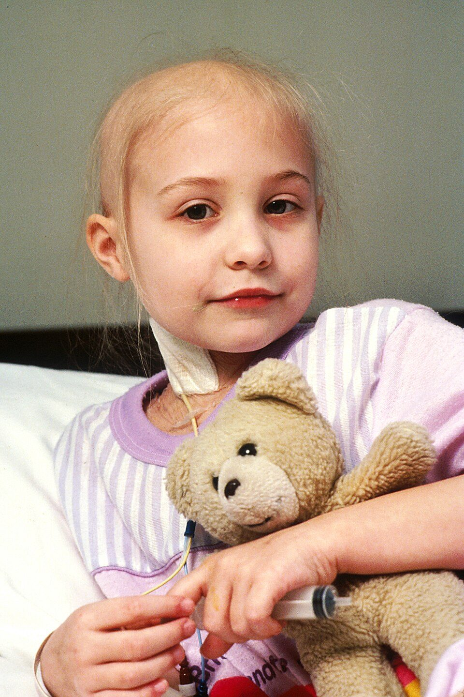

Información divulgativa. No sustituye la valoración de tu equipo médico ni sirve para decidir un tratamiento.


Lo primero: cuándo consultar sin esperar
Durante el tratamiento, consulta enseguida (según las instrucciones de tu equipo, o en urgencias) si tienes:
- Fiebre de 38 °C o más, o escalofríos, especialmente durante la quimioterapia.
- Falta de aire, dolor en el pecho o hinchazón de una pierna.
- Diarrea intensa o que no cede, sobre todo con inmunoterapia.
- Vómitos que no te dejan beber, sangrado, confusión o debilidad nueva.
Efectos frecuentes y qué ayuda
| Efecto | Qué puede ayudar |
|---|---|
| Cansancio (astenia) | Es el más frecuente. Paradójicamente, la actividad física moderada lo mejora. Organiza el día, descansa sin pasarte el día en cama, y consulta si hay anemia o tiroides alterado |
| Náuseas y vómitos | Hoy se previenen muy bien con antieméticos antes del tratamiento. Comidas pequeñas y frecuentes, alimentos fríos y sin olores fuertes |
| Llagas en la boca (mucositis) | Higiene con cepillo suave, enjuagues sin alcohol, evitar alimentos ácidos o picantes |
| Diarrea o estreñimiento | Hidratación, ajustes de la dieta y medicación según el caso. Avisa si es intensa |
| Caída del pelo | Con algunos fármacos. Suele volver a crecer. El gorro de frío la reduce en algunos esquemas |
| Defensas bajas | Lavado de manos, evitar personas con infecciones, seguir las pautas de alimentación segura que te den |
| Hormigueo en manos y pies (neuropatía) | Avisa pronto, porque puede ser necesario ajustar la dosis |
| Piel | Hidratación, protección solar. Algunas terapias dirigidas causan erupciones que se tratan |
| Cambios en el gusto y el apetito | Probar sabores nuevos, comer cuando haya hambre, consulta con nutrición si pierdes peso |
| Niebla mental | Dificultad para concentrarse o recordar. Suele mejorar con el tiempo; ayudan las listas y la actividad física |
Efectos según el tratamiento
- Quimioterapia: los de la tabla, según el fármaco.
- Radioterapia: sobre todo en la zona tratada (piel, mucosas, intestino, vejiga) y cansancio.
- Inmunoterapia: inflamaciones de distintos órganos, que pueden aparecer meses después. Avisa de cualquier síntoma nuevo.
- Hormonoterapia: sofocos, dolores articulares, pérdida de masa ósea, cambios en la sexualidad.
- Cirugía: dolor, linfedema tras quitar ganglios, cambios en la imagen corporal.
Habla de todo
Los efectos sobre la sexualidad, el estado de ánimo o la imagen corporal a veces no se comentan por pudor, pero tienen solución o alivio. Lleva una lista de síntomas a cada visita y pregunta. Tu equipo de enfermería oncológica es un gran aliado.
Ver también: Alimentación y ejercicio, Apoyo emocional, Quimioterapia.
Fuentes
- NCI. Efectos secundarios del tratamiento del cáncer. cancer.gov/espanol/cancer/tratamiento/efectos-secundarios
- SEOM. Información para pacientes. seom.org
- Asociación Española Contra el Cáncer. contraelcancer.es